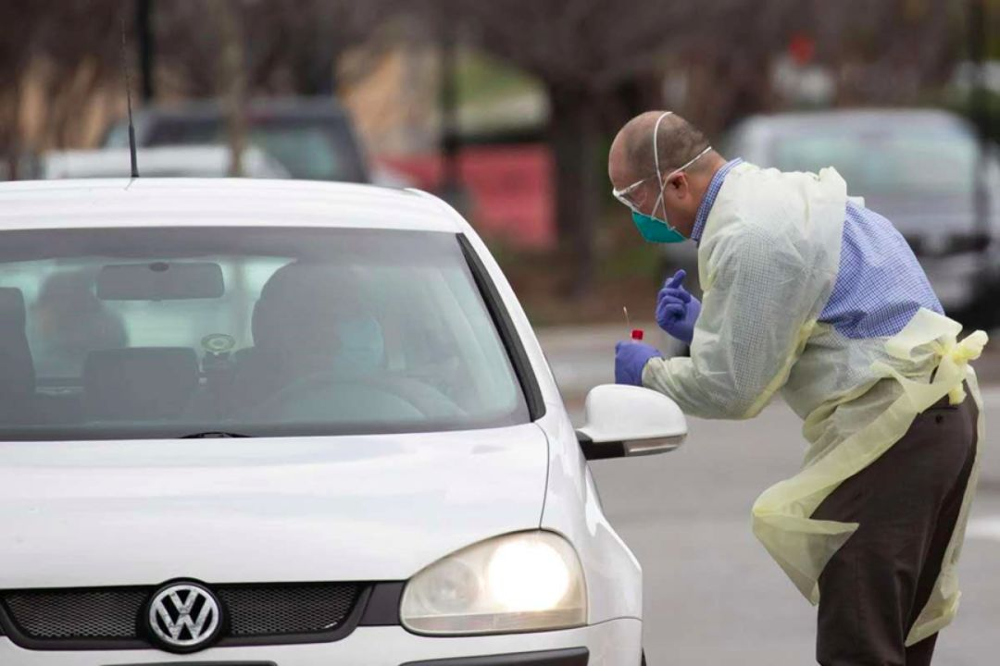
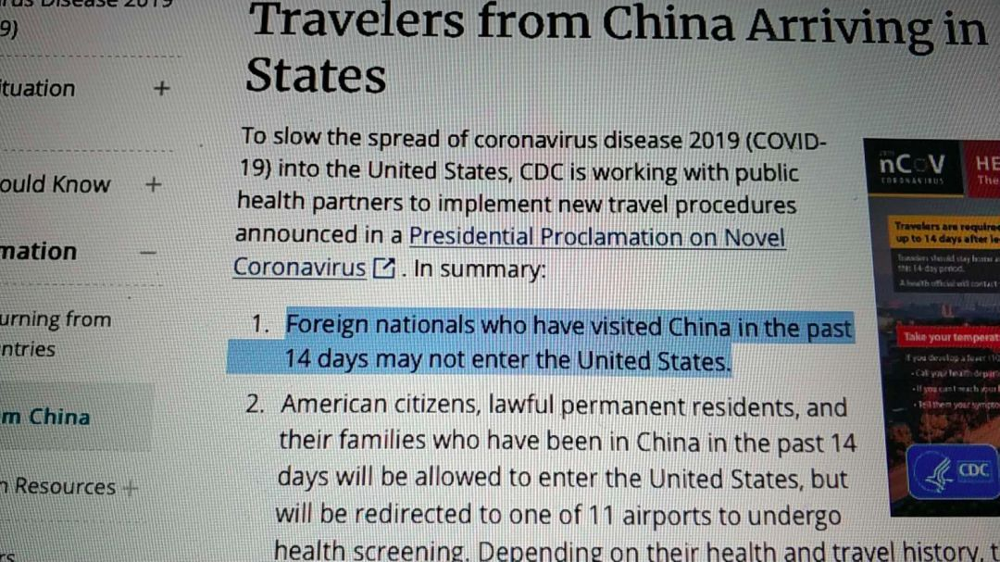
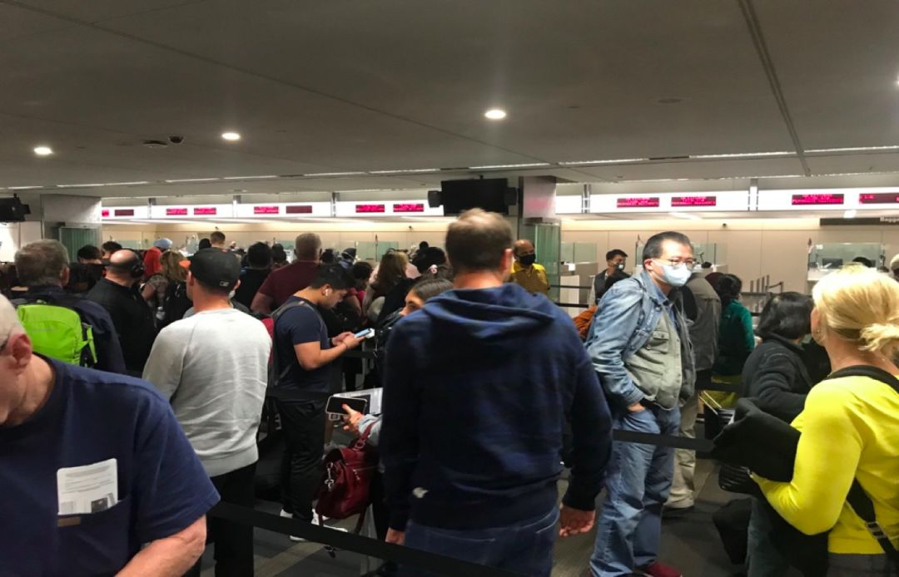
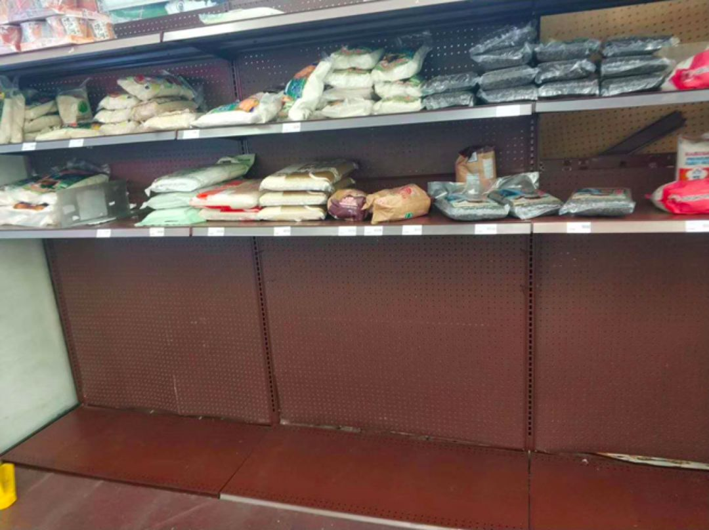
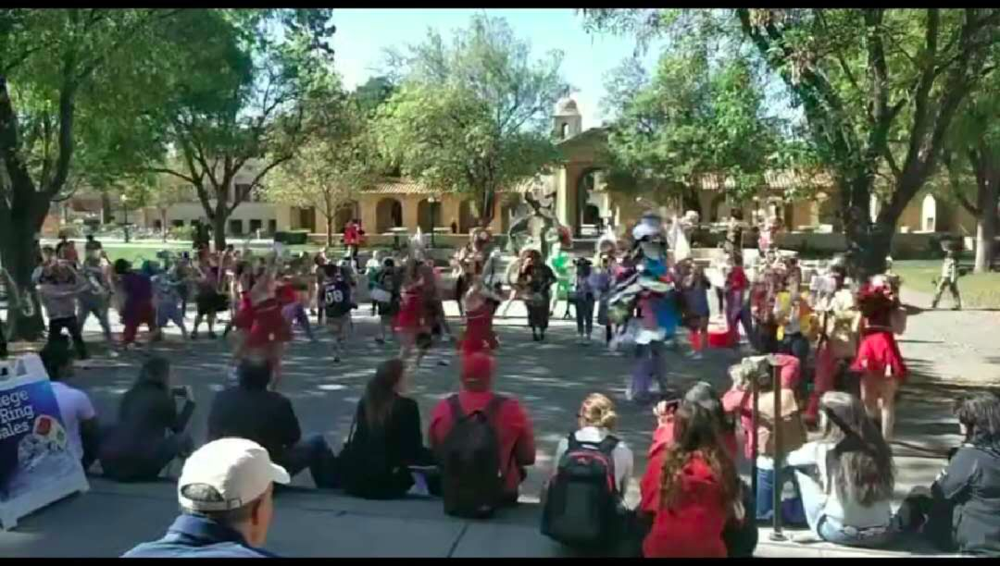
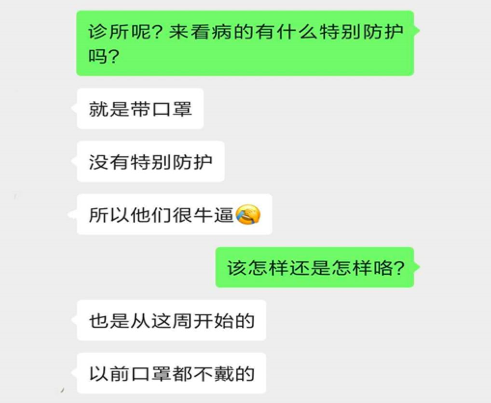
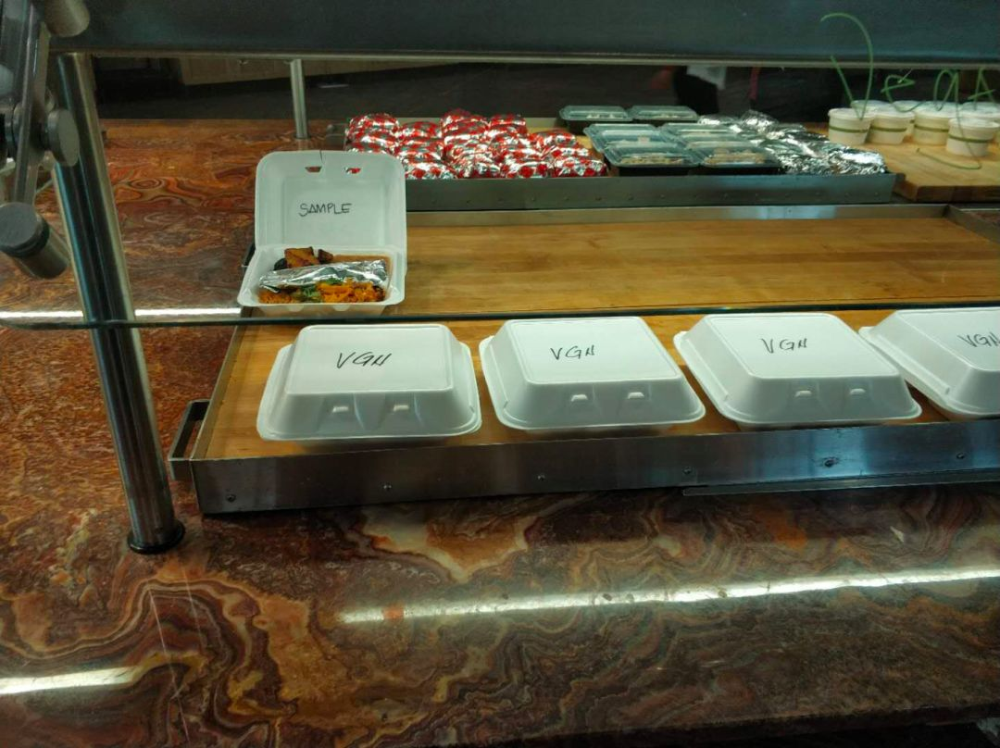

亲历英国抗疫：华人胆战心惊，老外跟风囤货
原文链接 备份链接 意大利确诊数破千时，大部分英国人还在隔岸观火，有人甚至拿新冠病毒开玩笑。如今英国人聚集的社交网络上多的是祈祷上帝保佑的推文。有人调侃说，老外都跟在华人后面逛超市，华人买什么他们就买什么 文 |《财经》驻英国特约作者 文 …
美国的医疗条件虽然很好，医疗资源分配很平均，但是在新冠肺炎流行这种特殊情况下，无法做到统一管理，没有上层命令的约束，各管各的运行，是很难达到理想的效果的。
撰稿 | 石 头
最近几天，医院在停车场附近开设了专门的Drive-thru测试，这是一种快速测试哨卡，不过工作人员的防护级别嘛，就很难说了。

我是一名上海医生，从2019年5月起一直在美国加州湾区进行访问学者交流。
3月16日，旧金山湾区6个县宣布了公共封锁的“就地庇护令”（Shelter in place），要求辖区所有居民，从3月17日开始留在家里“避难”三个星期直至禁令解除。
那么从1月21日美国出现首例确诊患者，这两个月以来，美国人民是如何进行预防的呢？

禁令后往日车水马流的街道空无一人

餐馆也被迫关门
曾经关注点只有“外国人”
今年1月起国内开始暴发新冠病毒的感染，对全国人民的生活都造成了很大的影响。身处异乡的我不能回到自己熟悉的岗位上和大家一起并肩作战，但还是时刻关心着国内的情况。
由于加州这里的华人众多，和国内仍旧保持着十分密切的联系，因此，疫情暴发初期，这边的华人就已经开始行动起来，CVS，Costco等能买到口罩的地方都有华人的身影，有给自己买的，更多的是准备寄回国内，支援国内的家人。
而在疫情的早期，由于美国这边的确诊病例都是输入性病例，因此，CDC的防控重心也是提高对入境的有过中国大陆旅游史的筛查工作，加强在机场的排查，甚至在2月初起就对有过中国大陆居住及旅游史的非美籍公民采取了禁止入境的措施，并提高对中国的旅行预防措施至“警告”的最高级别，避免不必要的出行。

这是政府对外的口径，而事实上，在1月31日，特朗普宣布禁令的前一天，我去旧金山机场接从国内来的同事时，依旧没有看到任何需要检测及防护的措施，甚至都没有对入境的乘客进行体温测量，入关时，有一个专门的CDC工作区域，在工作日的早上十点多，这个区域就是一个摆设的存在，空无一人，连工作人员都没有，而对于入境的同事，也只是由海关人员询问了一下有无武汉旅游史，和平日并无任何区别。

依旧繁忙的旧金山机场
3月之前，囤货的基本是华人
而政府对内则一再强调传播风险很低，只需做好个人清洁卫生，无需戴口罩。
每年11月至次年4月，美国都处于流感季节，常见的咳嗽、发热、肌肉酸痛等不适症状一般都不会去就医，因此，各个医院也没有特别的发热门诊，学校依旧正常上课，医院里除了手术室以外，没人戴口罩，大家见面依旧握手致意，热情拥抱，甚至在手术室外的走廊上，相互聊天时口罩都已脱掉。
我所在的医院是一所大型私立医院，很少会有发热病人直接来就诊的，我们科室的教授每周一天门诊，当天会有三十多个患者就诊，都是提前预约好的，分散在不同的时间段，而且为了保证每个患者的隐私，门诊都有单独的等待室。因此不会像国内一样专家门诊门口大排长龙、热闹非凡的现象。
在国内如火如荼的进行各种防范治疗病毒的工作时，美国这边的感觉就是“一副事不关己高高挂起的姿态，反正我已经关闭入境门槛，病毒是不会进来的”。
到了2月中下旬，随着更多“不明原因社区传播病例”的出现，最早感知情况不妙的华人们又开始行动了，这个时候去超市的时候会发现，米、面、米粉都货物都会出现短缺，尤其在99 Ranch，Marina等华人超市，而速食的披萨、大份肉类、厕纸等依旧摆满了货架，这种风格一看就是华人囤货的类型。
后知后觉的美国人似乎还没有意识到病毒的影响已经越来越近，学校的食堂、图书馆等人员密集的地方除了张贴勤洗手的建议公告外，一切还是和往常一样，排队吃饭，聚会聊天，而且……不戴口罩。

华人风格的囤货，只抢大件米面
这个阶段，除了在周末的华人超市，能看到营业员和三三两两的中国人戴着口罩，其他情况下，还是没人戴口罩做防护，毕竟在西方的思维中，戴口罩的都是生病的人，健康人是不需要的。很多当地华人担心受到歧视而一直没敢戴口罩。

校园集会依旧热闹非凡
对于我们这些访问学者来说，由于经常要在医院的手术室出入，戴着口罩并不是很显眼的事情，因此上班时我们都会刻意戴好口罩。

但在日常生活中，我们并没有像国内一样，一直戴着口罩出门，主要原因还是因为地广人稀，就算你平时走在马路上，也不会碰到几个人，唯一的防护措施就是避开高峰去超市购买生活品。
3月后，上网课、少手术，但不“强制”
转折点出现在3月份，这时候医院职工和学校学生都已经有出现确诊病例了，学校提早放春假，开始网上授课及考试，禁止校内任何聚会活动。学校食堂的自助餐变成了外带，不允许任何堂吃。

所有食物统一打包，进行外带
实验室的同学接到通知，实验室关闭等待进一步通知。医院要求评估所有已预约手术和预约患者，尽可能减少不必要的手术和门诊，科室也将病例讨论的会议转成网络讨论。但这些都不是强制性措施，只是分散给各个科室自行安排。

确实很让人担忧。毕竟按照国内的经验来看，如果一个医院无法将确诊病例、疑似病例及健康病例合理分流的话，在目前没有特效药的情况下，只会进一步增加感染的风险。
我觉得，美国的医疗条件虽然很好，医疗资源分配很平均，但是在新冠肺炎流行这种特殊情况下，无法做到统一管理，没有上层命令的约束，各管各的运行，是很难达到理想的效果的。


· 深度好文 | 特朗普及西方政客们热衷炒作“中国病毒”的真正目的
· 还原世卫组织“吹哨”时间轴——“机会之窗”是如何失去的？
新民周刊所有平台稿件， 未经正式授权
一律不得转载、出版、改编或进行
与新民周刊版权相关的其他行为，违者必究


原文链接 备份链接 意大利确诊数破千时，大部分英国人还在隔岸观火，有人甚至拿新冠病毒开玩笑。如今英国人聚集的社交网络上多的是祈祷上帝保佑的推文。有人调侃说，老外都跟在华人后面逛超市，华人买什么他们就买什么 文 |《财经》驻英国特约作者 文 …
原文链接 备份链接 编者荐语： 就像是武汉封城之后，许多网友开始制作自己的视频日记，这让世界了解了武汉的人们的日常与他们面对疫情的许多情绪。四十日谈也正在创建一个平台，用影像使不同国家的人们看到在意大利的人们的状态。秋凉从封城的第0天开始 …
原文链接 备份链接 据最新数据，意大利确诊新冠病例数已超过7000，累计死亡366例，是除中国之外，全球疫情最严重的国家。 在意大利的华侨人数众多。武汉疫情起来时，他们积极捐款捐物，把当地能买到的口罩一扫而空。 意大利医疗系统对新冠 …
原文链接 备份链接 截止3月6日下午，美国共有20个州出现新冠状肺炎，确诊316例，其中14名患者死亡，死者多来自西雅图地区的同一个养老院。美国疫情到底怎样，看看来自西雅图、旧金山、纽约三地的疫情日记。 西雅图 文／CC 周二孩子们继续待 …
原文链接 备份链接 境外累计确诊病例即将超过2万。美国很可能有上千例潜在感染病例以及他们的密切接触者未能被及时发现和隔离，到目前为止，“我们看到的美国官方病例数字可能只是冰山一角”。 文 |《财经》数据研究员徐进 图 |《财经》 …